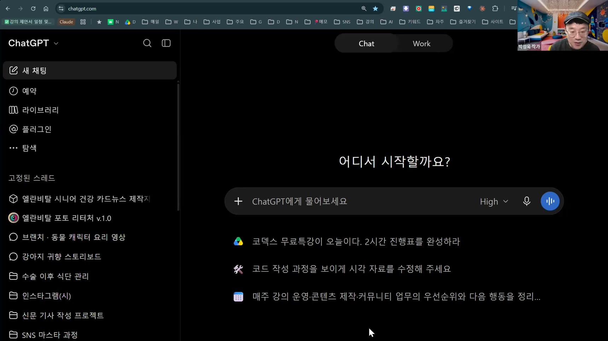
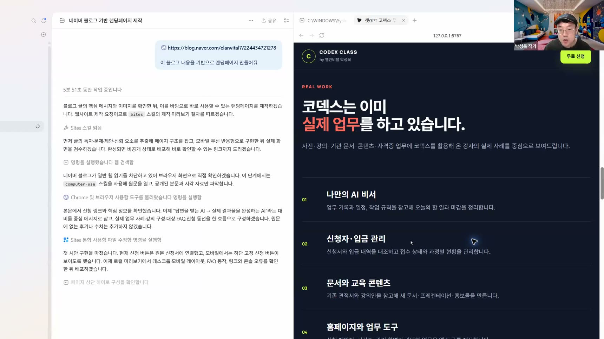
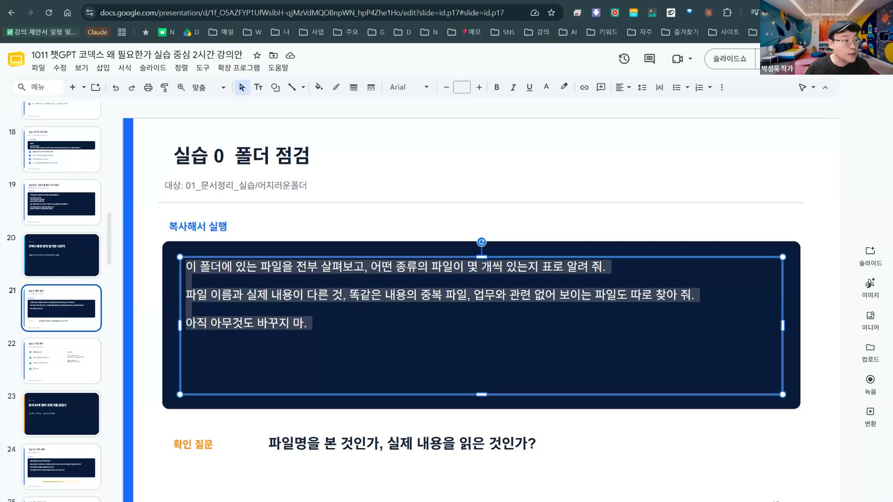
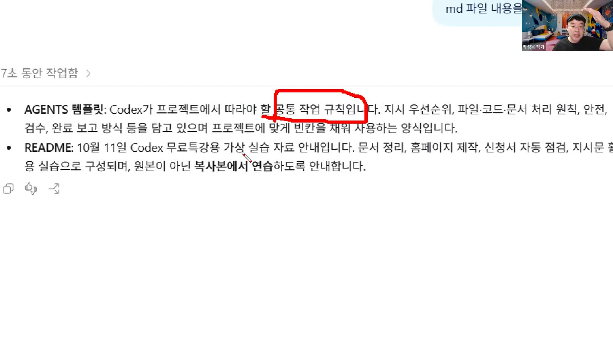
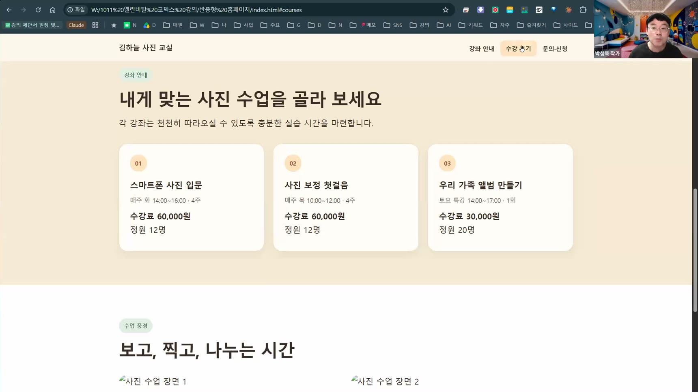
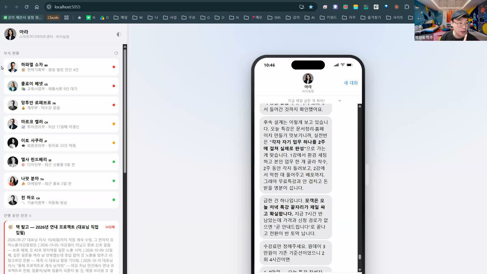

챗GPT 안에서 코덱스를 시작하는 법
ChatGPT 데스크톱 앱과 Work, 코덱스의 관계를 이해하고 설치·초대·사용량·크레딧·모델 선택을 실제 화면에서 확인합니다.
데스크톱 앱무료·유료 사용모델 선택사용량 관리
10월 11일 챗GPT 코덱스 실전특강의 녹화본과 강의 PPT, 홈페이지 설계도, 실습자료를 한곳에 모았습니다. 영상을 보며 직접 코덱스를 실행해 보세요.

처음부터 순서대로 보거나 필요한 부분을 다시 찾아보세요. 영상 재생 중에는 PPT를 함께 열어두면 실습 흐름을 따라가기 쉽습니다.
현재 공개된 2시간 19분 19초 편집본을 직접 대조해 정리했습니다. 시간 버튼을 누르면 해당 파트부터 바로 볼 수 있습니다.

ChatGPT 데스크톱 앱과 Work, 코덱스의 관계를 이해하고 설치·초대·사용량·크레딧·모델 선택을 실제 화면에서 확인합니다.

파일 종류·중복·내용 불일치를 먼저 조사하고, “아직 바꾸지 마”라고 안전 기준을 세운 뒤 복사본에서 정리하는 첫 실습입니다.

README와 AGENTS.md가 무엇인지, 프로젝트의 공통 규칙을 어떻게 전달하는지 배웁니다. 새 세션과 대화 압축으로 사용량을 아끼는 운영법도 함께 다룹니다.

폴더·블로그 글·실제 사진을 참고자료로 주고 페이지를 만듭니다. 신청 버튼 연결, 이미지 교체, PC·모바일 검수와 수정 요청까지 한 흐름으로 보여줍니다.

가상의 신청자 현황에서 정상·확인 필요 항목을 구분하고 원본을 보존한 채 결과를 만듭니다. 실제 AI 비서·업무 도구·예약 작업 사례로 확장 가능성까지 확인합니다.
원하는 카드의 ‘복사하기’를 누른 뒤 코덱스 입력창에 붙여 넣으세요. 대괄호 안의 내용만 내 자료와 목적에 맞게 바꾸면 됩니다.
원본 파일은 절대 수정하거나 삭제하지 말고, 반드시 복사본(또는 새 폴더)에서만 작업해 줘. 파일을 읽고 조사하는 것은 바로 해도 되지만, 파일을 옮기거나 이름을 바꾸는 작업은 먼저 계획을 보여 주고 내가 '진행'이라고 하면 그때 실행해 줘.
이 폴더에 있는 파일을 전부 살펴보고, 어떤 종류의 파일이 몇 개씩 있는지 표로 알려 줘. 파일 이름과 실제 내용이 다른 것, 똑같은 내용의 중복 파일, 업무와 관련 없어 보이는 파일도 따로 찾아 줘. 아직 아무것도 바꾸지 마.
폴더는 영수증 / 강의계획서 / 수강신청서 / 회의록 / 견적서 / 행사사진 / 안내문 / 확인필요로 나눠 줘. 파일 이름은 날짜_종류_내용 형식으로 바꿔 줘. 끝나면 정리 전과 후의 파일 개수를 비교해서 빠진 파일이 없는지 확인해 줘. 정리된 전체 목록을 엑셀 파일로 저장해 줘. 영수증은 중복과 견적서를 제외하고 합계 금액도 계산해 줘.
현재 템플릿을 이 폴더의 중요한 md 파일로 지정해줘. 이름도 그렇게 만들어줘.
지금 열려 있는 작업 폴더 안에 다음 세 폴더를 만들어 줘. input: 원본 자료 보관 work: 복사본으로 실제 작업 output: 완성된 결과물 저장 같은 이름의 폴더가 이미 있으면 그대로 두고, 없는 폴더만 새로 만들어 줘. 기존 파일은 옮기거나 수정하거나 삭제하지 마. 완료되면 세 폴더의 위치를 확인해서 알려 줘.
이 내용을 기반으로 반응형 홈페이지 만들어줘.
카카오톡 창이 너무 많이 열리면 정신이 없어. 단축키로 카카오톡 창을 한쪽에 정렬하도록 만들어줘.
가상_신청서_접수현황.xlsx를 접수확인_기준.txt의 기준대로 점검해 줘. 문제 없는 건과 확인이 필요한 건을 나눠서 새 엑셀 파일로 저장해 줘. 확인이 필요한 건은 이유를 한 칸에 적어 줘. 마지막에 한 장짜리 요약 보고서도 만들어 줘. 총 접수, 정상, 확인 필요, 강좌별 정원 현황을 넣고 원본은 수정하지 마.
영상 편집을 하고 싶어. 짧은 영상들을 모아서 한편의 영상으로 만들어줘. 중간에 무음 구간이나 필요 없는 구간은 컷편집해. 자막은 가독성 좋게 넣어서 만들어줘.
ffmpeg를 다운로드해서 영상 편집할 수 있게 해줘
녹화본과 학습 정리, 인쇄용 PDF, PPT, 홈페이지 설계도, 실습자료까지 학습에 필요한 자료를 한곳에 모았습니다.
2시간 19분 19초 편집본을 유튜브에서 시청합니다.
녹화본 보기 02 · STUDY NOTES처음 쓰는 분도 다시 따라 할 수 있도록 핵심 개념과 실습 흐름을 정리했습니다.
학습자료 보기 03 · PRINTABLE PDF출력해서 필기하며 학습할 수 있는 인쇄용 PDF를 바로 내려받습니다.
PDF 다운로드 04 · SLIDES설명 순서와 핵심 내용을 슬라이드로 다시 확인합니다.
PPT 열기 05 · HOMEPAGE BRIEF12가지 질문에 답하고 헤드라인과 코덱스 제작 요청문을 만듭니다.
설계도 작성하기 06 · PRACTICE FILES수업에서 사용하는 실습자료 파일 하나를 바로 내려받습니다.
파일 다운로드완벽하게 외우기보다 한 가지 결과물을 직접 만드는 것이 중요합니다. 영상과 자료를 번갈아 보며 바로 실행해 보세요.
전체 목차와 핵심 개념을 먼저 훑어 오늘 만들 결과를 정합니다.
영상을 멈춰가며 내 컴퓨터에서 같은 작업을 직접 실행합니다.
실습자료를 활용해 폴더 정리·페이지 제작·자동화 중 하나를 완성합니다.